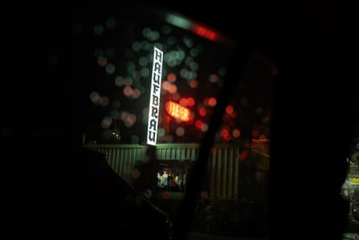
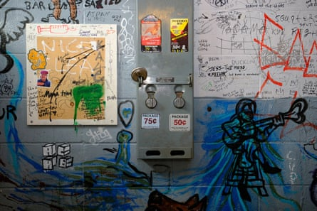
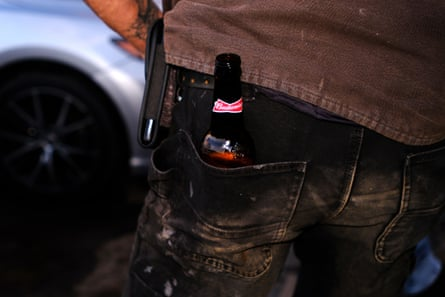
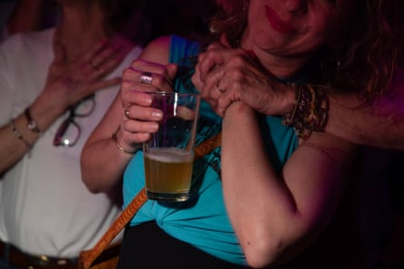
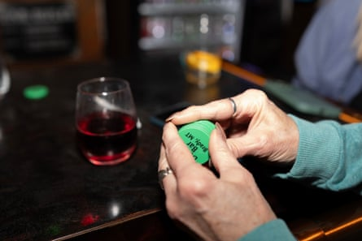
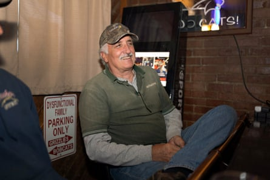
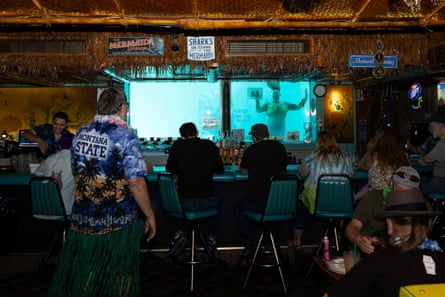
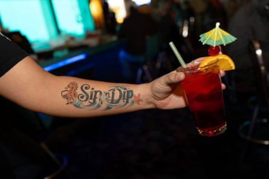
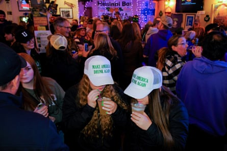
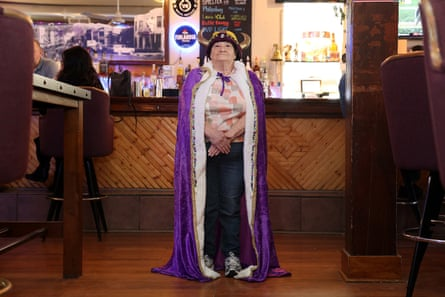

The Filling Station in Bozeman, Montana.Photograph: Janie Osborne
It’s been over two decades now, but as I remember it: the floor was sticky with peanut shells and beer.
I could feel a crunch underfoot amid the din of garbled conversation as my young, righteous girlfriends and I made our way to a wobbly table at the Haufbrau in Bozeman, Montana .
I was there to hear a friend play guitar and sing at open mic night. As it turns out, so was my future spouse. I was emboldened by the emotion of a recent breakup, the energy of a girls night and, perhaps, liquid courage.
Maybe it was also the magic of the bar, because when I spotted him across the room, I flicked a peanut at him. Within a matter of hours, we were parting, and he was saying “I love you.”
These days instead of a group of friends, I come with a lot of media equipment – straps, cords, cameras, laptop, and a black paper journal and pen – as I set out to explore dive bar culture in Montana.
I begin my reporting at the Filling Station, located on the outskirts of now trendy Bozeman, a few miles from my home. Inside, the walls are covered with vintage license plates, street signs, a large red flying horse at ceiling height, a buffalo mount with a Hawaiian lei and a stuffed deer head ridden by a skeleton.
A colorful wall in the men’s room at the Haufbrau in Bozeman, Montana.Photograph: Janie Osborne
“That stuff just accumulates,” says Bill Frye, who owns the bar with his mother, Cin, and brother Don. “I think the skeleton was a Halloween prop that ended up on the deer that was already mounted.”
“The deer is new,” he adds. And by “new” he means within the last 20 years. “A regular who is a taxidermist brought that down.”
In addition to the deer, many other things on the Filler’s walls have been donated by customers, some en route to the city dump down the road. Others were collected by Bill’s parents more than 20 years ago.
“The bison head is off the record,” Bill says. But then as the conversation unfolds, he reveals a few scant details: third floor, a lodge near Glacier national park, a rope, taxidermy and a bunch of guys who brought it down here. But, he concludes, thinking out loud, they are all dead now, so it’s OK to write about it.
The variety of people who come to the Filler (and the Hauf) are as colorful as the decor. You see everything from pressed Oxford shirts to cowboy boots to camouflage pants to 1980s attire to bare feet in Birkenstocks (in cold weather).
Intimate moments at the Filling Station, also known as the Filler.Photograph: Janie Osborne
These days, Bozeman is home to all kinds of fancy bars, from social club to wine to rooftop, yet “there are no more [dive bars] coming in,” says Bill. Because of the high cost of commercial properties and alcohol licenses, “[it takes] a minimum of several million to open a new bar in Bozeman. When we purchased the Hauf in 1969 the whole thing was under $100,000. It was a lot at the time. But we couldn’t afford to sell it now with the high property-gains tax. We are caught in a trap.”
Given all the new high-end choices, it’s a bit of curiosity that people continue to show up in cultlike fashion at both the Filler and the Hauf. “People like the fact that they feel at home,” Cin says. “We [the owners] can drive by one of the bars and know who’s in there by the cars outside.”
It’s a community center where you feel relaxed, Bill and Cin agree. “Several customers tell us if we weren’t here they would be gone too,” says Bill.
When I enter Dusty’s Bar in the dry land farming community of Brady, Montana, my first reaction is: “This is a dive bar? It’s so clean.”
The polished wooden bar and shiny floors are the result of a renovation during the pandemic in 2020, says owner Kourtney Combs, who purchased Dusty’s in 2019. The spotlessness is a good thing, because many people come here to eat.
Every Friday, Kourtney’s partner, Travis Looney, starts smoking meat – barbecue pork, tri-tip, briquet, sausage, ribs, turkey – at around 3am so it’s ready to go by 5pm. By 7pm, it’s sold out. In addition to having great food, Dusty’s is also a place where customers chip in.
“If I get too busy, people will just get up and start helping,” says Combs. “They’ll take their dishes back. They’ll stock the cooler. They’ll clear other people’s plates. If I have to leave the bar for 20 minutes, it will take care of itself. Customers will get their own drinks. Honor system. We trust them.”
When I sit at the bar with locals Gus Winterrowd, a retired farmer; Jeff Farkell, a crop consultant; and Dan Rouns, a retired farmer and previous Dusty’s owner, the conversation spans topics as far-ranging as life before technology to soil samples to memories of spinning records in the disco bar upstairs. This is how we landed on the topic of the “cancer belt”.
Top: At Dusty’s Bar, green chips are given to customers who are treated to drinks by other customers. The chips can be held on to and redeemed at any time.Bottom: Gus Winterrowd, a local, enjoys a laugh at Dusty’s in Brady, Montana.Photograph: Janie Osborne
Winterrowd tells the group he heard the term from his wife’s doctor in Seattle when he asked: “What’s the deal with all the cancer in our area?” And the doctor responded: “It’s the cancer belt,” referring to the rate of illness in women in communities across the midwest to northern plains.
“She put up one hell of a fight,” says Rouns about Winterrowd’s wife. “She did anything any person could do.”
At this point in the conversation, I realize that a big part of the beauty of the dive bar is that it’s a place of connection, a place where real people come to know each othe in real time.
Of course, such moments of gravity are balanced with humor: “We give each other shit. Ninety-ninety percent of the time we all get along. And we don’t talk politics unless we’re really drunk,” says Farkell.
Forty-six miles down the road from Brady on the Missouri River, in the small city of Great Falls, I’m crouched with my camera near a mannequin wearing a repurposed prom dress in a room overflowing with fabrics, threads and sequins.
At center is a Singer sewing machine and at the helm, Sandra Thares, seamstress of mermaid costumes and owner of the Sip ’n Dip Lounge, a tiki retro cocktail bar. Yes, mermaid costumes. Sip ’n Dip features windows with underwater views of swimming mermaids. (Currently, there are no mermen.)
Top: Mermaid Bingo Night at the Sip ‘n Dip Lounge in Great Falls, Montana.Bottom: A Sip ‘n Dip bartender shows off his tattoo.Photograph: Janie Osborne
As part of their employment, each mermaid receives two tails and two tops per tail – all handmade by Thares. In 1996, the first swimming mermaid was a housekeeper dressed in a green plastic tablecloth on New Year’s Eve.
Over time, the concept became popular and grew into a regular weekend event. It’s now a defining aspect of the bar, with mermaids putting on a show six or seven times a week. Mermaid Bingo Night was added in 2024. The evening entails three rounds of bingo in which the mermaids hold up the number cards. It is, as Thares puts it, “something to do on a cold Montana winter Monday”.
Usually, everyone gets a Hawaiian lei. The prizes are not monetary but instead they are “fabulous” rewards.
No matter what is happening on any given evening, Thares says, “I always tell people that the thing about the Sip ’n Dip is that it doesn’t matter who you are, where you are from, what your background is, what your political beliefs are, none of that matters [at] the Sip’ n Dip; there’s always something to talk about. And no matter who you are, you make new friends.”
At each dive bar that I visit, people share the details of other dive bars that I should go to. More than once, people point me in the direction of Sun River and the “bra bar”, more formally known as the Rambling Inn – a place where customers leave their bras behind to hang on the walls in exchange for free drinks. Alas, the bra theme is great fodder for good-natured double entendres regarding “cups” and a fun starting point for lighthearted conversation.
Throughout my dive bar tour, the Helsinki Bar – the last remaining building in Finn Town in the small mining community of Butte – kept calling me back.
Photograph: Janie Osborne
Top: People celebrate St Urho’s Day, a Finnish holiday that honors the fictional St Urho, at Helsinki Bar in Butte, Montana.Bottom: Fiina Heinze is crowned 2025 Queen of St Urho’s Day at Helsinki Bar.Photograph: Janie Osborne
I was previously there on St Urho’s Day, a Finnish holiday celebrating the fictional St Urho, when I met Fiina Heinze. Heinze is of Finnish descent, and I witnessed her crowning as the 2025 Queen of St Urho’s Day amid a packed bar, jello shots and premade plastic bags filled with a mysterious mixed drink.
According to Heinze, St Urho is celebrated for driving away the grasshoppers that were destroying the grape crops in Finland. The holiday is something of a whimsical Finnish rivalry to St Patrick’s Day: “It’s just a day that the Finns decided to have [on] the day before St Patrick’s Day. It’s not a national holiday.”
I think that’s the thing about dive bars: in large part, they are about stories. The stories that we listen to and that we share. The stories we experience while we are there.
And if you’re lucky, it can mark the beginning of a new story with a lifelong partner.
All this, I think, is like the dive bar itself: an expression of that imperfect, enduring and sometimes sticky thing called love.